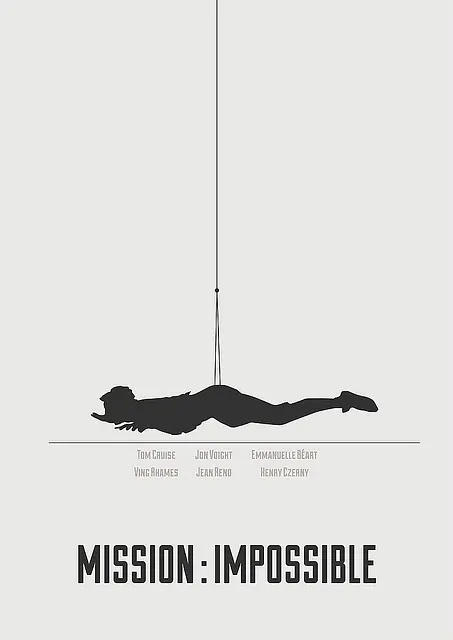

碟中谍

概况
导演: 布莱恩·德·帕尔玛
编剧: 大卫·凯普 / 罗伯特·汤 / 斯蒂文·泽里安 / 布鲁斯·盖勒
主演: 汤姆·克鲁斯 / 强·沃特 / 艾曼纽·贝阿 / 亨利·科泽尼 / 让·雷诺 等
类型: 动作 / 惊悚 / 冒险
制片国家/地区: 美国
语言: 英语 / 捷克语 / 乌克兰语 / 法语
上映日期:1996-05-22(美国)
片长: 110 分钟
剧情简介
中情局获得情报，得知他们的特工中出了一个叛徒，准备将中情局布置在东欧的特工名单出卖给外国特工组织。在特工头目吉姆（乔恩•沃伊特 Jon Voight 饰）的策划下，伊森（汤姆•克鲁斯 Tom Cruise 饰）所住的一组特工赶往了他们交易的地点。 岂料，当他们按计划赶到 时，却中了埋伏，一组人中除了伊森和吉姆的妻子克莱尔，其他队员都被杀害。这时，伊森的账户无端端多出了12万美金。伊森成了内鬼的最大的嫌疑犯。 无奈之下，伊森只能凭个人之力独闯龙潭虎穴去找出出卖他们的内奸。他和外国间谍组织的接头人麦克斯取得联系后，答应帮麦克斯偷出中情局的间谍名单以交换中情局内鬼的名字。
观影链接